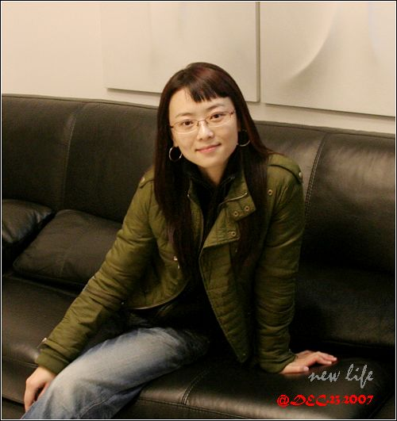
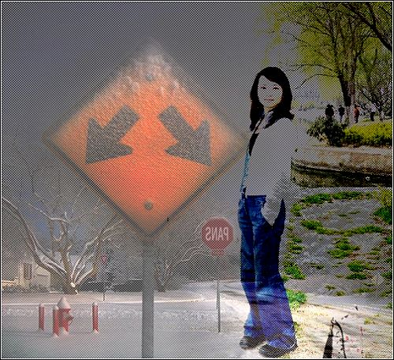

Archives : 2007-12
Ferrari Museum@Japan @ Dec 31, 2007
2007年会 @ Dec 29, 2007
12月26日，年终与供货商的工作会议

主持晚宴。拍摄的瞬间在抿嘴，看上去呆滞。从小驼背的习惯依然没有改变。身旁的帅哥进公司两年，讲话还带着稚气，走路踩着云朵。摄影技术在公司里可是数一数二，他的图片画面大多干净、线条简明。不好的照片是绝不拿出来示人的~

我刚进公司时的老领导，后来老先生升迁，每年只有这样的场合才能见到。对他心存感激，却从未表示过什么。无论怎样会以善良待人，那些对我好对我不好的面孔都会深刻地印存在我的脑海里，

12月26日的冬天不太冷。

Merry Xmas! @ Dec 25, 2007

8.5个小时 @ Dec 24, 2007
我自己设计的刘海，以前曾这么剪过，回归一下~两种颜色的所谓创意染发~效果挺漂亮~
周六晚上9：30到1：30，困得眼睛睁不开,连说打住吧。第二天下午从1：30左右到5：45总算结束了。用了8.5个小时弄看似简单的发型，痛苦的煎熬。据说有位女士，晚上11：30到店里烫发，一直到早晨5点才结束。
造型师老大，这是造宇宙飞船吗？


离喧哗很远，离自己很近。 @ Dec 21, 2007
抽了30张奖券，其中有28张是电影年票，2张储物盒，手气不错，周围人看着眼馋呢，哦也，28场电影，多么幸福的感觉，如果倒过来，28个储物盒~呵呵~
立刻去电影院看了《投名状》，据说电影放映第二天，10元的盗版碟就在南京卖开了。第一次看老徐古装打扮有点不适应。70年代男生的梦中情人，活生生脸上脏了半场电影，说实话老徐这次的扮相真不怎么滋润，即使喜欢她还是有点失望，是不是考虑到她的博客人气导演选用她来演这个角色？都说《投名状》是男人的电影，看完之后我还是没融进剧情里，完全不在状态。记得有个知名主持人采访她，有关《一个陌生女人来信》里的女人如何悲哀，她说不觉得啊，就是觉得这个电影里面最可悲的是姜文演的那个男人从来没有真正爱过。而女主人公反而对自己最真实，想爱就爱，不想爱就不爱，而且是那种我爱你与你无关，与周围人无关。
不晓得哪根筋蹩着，几年前的《人鱼小姐》在央视8套播映，从晚上10点开始一直到12：30结束，就这么每天晚上等着看，其实给妈妈买过《人鱼小姐》全套的DVD碟，不看碟子等电视台的看，一根筋也许就是这么解释的吧。妈妈总说我和雅俐英的性格象。芮莹和玛俊的恋情倒令人振奋和激动，周围人怎么想完全不是他们考虑的问题，即使被他人强烈的阻挠百般反对，仍然坚强的走到了一起。现实生活中玛俊的性格可能并不令人欣赏，然而这种唯唯诺诺的外表下却有着强于常人的毅志力。
这一年就快过去了，到公司这么多年，还是第一年没有休完假期，白天大部分时间被工作霸占着，只有晚上是自由的。这一年我发现自己越来越不爱说话，有时和好朋友通个电话，开始常常一片空白不知道说什么。同时发现无视可怜无趣的嘴脸是如此轻松。
这一年看到年轻的残忍，了解平静的幸福。
这一年有点忙有点累。
这一年离喧哗很远，离自己很近。

Winter B.l.u.e.s @ Dec 17, 2007
冬天的感觉到来了。
冬天、忙碌使内心安静。

“新欧”西藏行 @ Dec 11, 2007
Michael提供的连接“新欧西藏行” ，这位大侠用卫星电话，租加油车拉了11桶油跟着，有米。来去一共将近1万公里，回来换了三清，好好打整一下还是新车。底盘油箱被碰瘪了，备胎下的塑料盘挂花，其它一切都没问题。
看了后很兴奋，什么时候能开着我的新O去西藏呢？假期假期，至少20天的假期才能开车去西藏转一小圈。看来时常扎堆是有必要的，不然不会知道“砂石路不该用四驱“lock” ，应留在脱困时用，四驱“lock”时，速度应该低于10公里/小时。
WAR, between Jet Li and Jason Statham 昨晚看了李连杰的动作片 “WAR”《游侠》，有点像亚洲的《教父》，和他唱对手戏的是 Jason Statham。这个Jason就是演《非常人贩》I、II，及宝马和奥迪的一系列短片式的广告。李连杰驾驶的那辆车开始以为是GTR，后来才看清是SPYKER，真酷！
Isbella的中国之旅 @ Dec 04, 2007
试想一下，当我们拿着行李，独自一人踏上完全陌生的土地，且这个地方大多数人不说英语也不说我们的母语，随之耳朵和嘴巴失去功能，这种情形下我们会是什么样的感受？
当我们走进1912街区，那个金发碧眼擦肩而过的高大男孩友好而腼腆地朝我们微笑，在他身上异乡客的孤独感强烈袭来。和那个lonely的男生相比，法国来的ISBELLA状况算是不错的。至少旅行计划中的某几个城市有人接待。很难体会和想象当周围有些人百般炫耀并得意于自己手上拥有的那点物质，而一些外国人却辞去工作，有的甚至辞去相当不错的工作独自一人旅行的生活，虽然她的旅行不过短短一个月。他们是不是只想着眼前，只考虑现在的需要？大多数中国人求稳求收入，感受和需要却在其次，如果我们的政府能提供更好的社会福利，安全感也许会饱满许多？
当有人来访时我会对南京的白天和黑夜失望，实在没什么可推荐的。生活其中却有小滋味，游客们自然是体会不到，所以不要到南京来旅游。夜晚对于初来乍道的客人除了1912这个表情千变百态的浑浊之地，似乎没有别的地方可去了？这座城市标志性的夜生活仅于此，止于此。

出差 @ Dec 03, 2007
乘一夜火车的记忆应该是12年前。
这次出差到工厂，厂长的笑话多，另四个同事性格开朗，客人幽默，笑声不断。多些这样的出差，提高工作效率。有个情景要讲一下，客人吃饭时不经意打了个嗝，慌乱中说了sorry。周围好些人打嗝震天动地且逍遥大方，解释起来也许还是环境？！记得有个朋友说，她女友的BF是德国人，刚来中国看到很多人随地吐痰很是不解，过了一年这位德国人也开始随地吐痰了。当然，要是将随地吐痰和随便打嗝放在《泰塔尼克号》上那就是反现实叛逆的行为艺术，对吗？